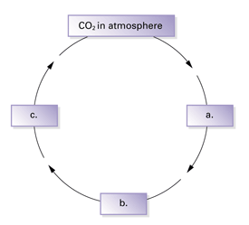
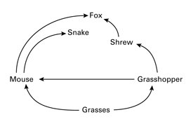
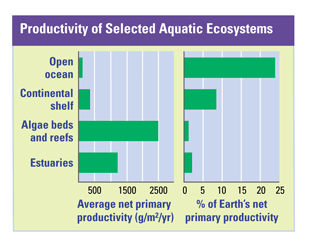

Reviewing Concepts
Multiple Choice
Choose the letter of the best answer.
1. A mushroom breaks down a decaying tree. The mushroom is an example of
a. a secondary consumer.
b. a producer.
c. a decomposer.
d. detritus.
2. An organism that eats only producers is called a(n)
a. omnivore.
b. carnivore.
c. herbivore.
d. quaternary consumer.
3. When you consume a serving of broccoli, you represent which trophic level?
a. producer
b. primary consumer
c. secondary consumer
d. tertiary consumer
4. Which of the following lists only includes ways that carbon is released into the atmosphere?
a. photosynthesis, nitrogen fixation, cellular respiration
b. forest fires, transpiration, decomposers breaking down detritus
c. greenhouse effect, nitrification, burning of fossil fuels
d. cellular respiration, forest fires, volcanic eruptions
5. The process through which certain bacteria convert nitrogen gas (N2) to ammonia (NH3) is
a. nitrogen fixation.
b. evaporation.
c. nitrification.
d. decomposition.
6. Which of the following events might be a sign of biomagnification of a pollutant?
a. an increase in global temperatures
b. a decline in the phytoplankton population
c. rising pH levels in aquatic ecosystems
d. a decline in the population of top-level consumers
7. Building a highway through a forest is an example of
a. habitat fragmentation.
b. poaching.
c. eutrophication.
d. biomagnification.
Short Answer
8. Describe a meal in which a person would be feeding at two or more trophic levels and identify the levels.
9. Predict whether a temperate deciduous forest or a desert ecosystem would have a higher level of annual primary productivity per square meter. Explain your answer.
10. Explain why food chains generally are limited to three or four levels.
11. Discuss the information represented in an energy pyramid, a biomass pyramid, and a pyramid of numbers.
12. Summarize the basic pattern of a chemical cycle in an ecosystem.
13. List three roles that bacteria play in the nitrogen cycle.
14. What is the greenhouse effect? Explain how it is significant to Earth's ecosystems.
15. Describe the concept of sustainable development.
Visualizing Concepts
16. Copy the cycle diagram below and complete it to show one possible path of carbon through the carbon cycle.

Applying Concepts
Analyzing Information
17. Analyzing Diagrams Use the food web diagram to answer the questions below.

a. Which organism(s) are tertiary consumers?
b. Which organisms consume the grasshopper? What trophic level do they represent?
c. Use the diagram to create one simple food chain with at least three trophic levels.
18. Analyzing Graphs Use the graph to answer the following questions.

a. Which ecosystem shown has the lowest primary productivity per square meter? Which has the highest?
b. Which ecosystem shown represents the greatest percentage of Earth's total primary productivity? Which represents the least?
c. Does an ecosystem's average net primary productivity match its percent of Earth's primary productivity? Explain why or why not.
Critical Thinking
19. Relating Cause and Effect Explain two ways that deforestation can affect levels of carbon dioxide in the atmosphere.
20. Relating Cause and Effect Explain how eutrophication can lead to the death of fish in a lake.
21. Developing Hypotheses Suggest one reason why, although CFCs are no longer used in many countries, the ozone layer continues to shrink.
22. Making Generalizations Use an example to explain one reason that people value biodiversity.
23. Evaluating Promotional Claims A cleaning product claims that it is "good for the environment" because it uses a natural plant chemical to dissolve grease. Is this product necessarily "good for the environment"? Explain.
24. What's Wrong With These Statements?
Briefly explain why each statement is inaccurate or misleading.
a. In the water cycle, all water returns to the atmosphere by transpiration.
b. Poaching threatens biodiversity because it releases large amounts of pollution.
c. When a spider eats a fly, the spider will use most of the energy stored as biomass in the fly to build new biomass of its own.
Performance Assessment
Writing You are one of six people chosen to live on a self-contained space station. What organisms would you bring with you? Describe the functions you'd need each organism to perform.